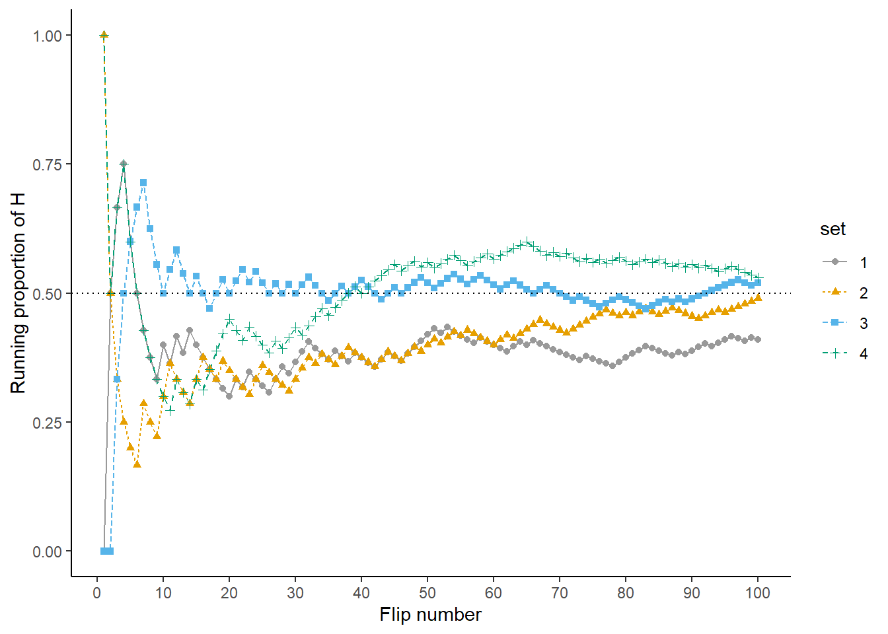
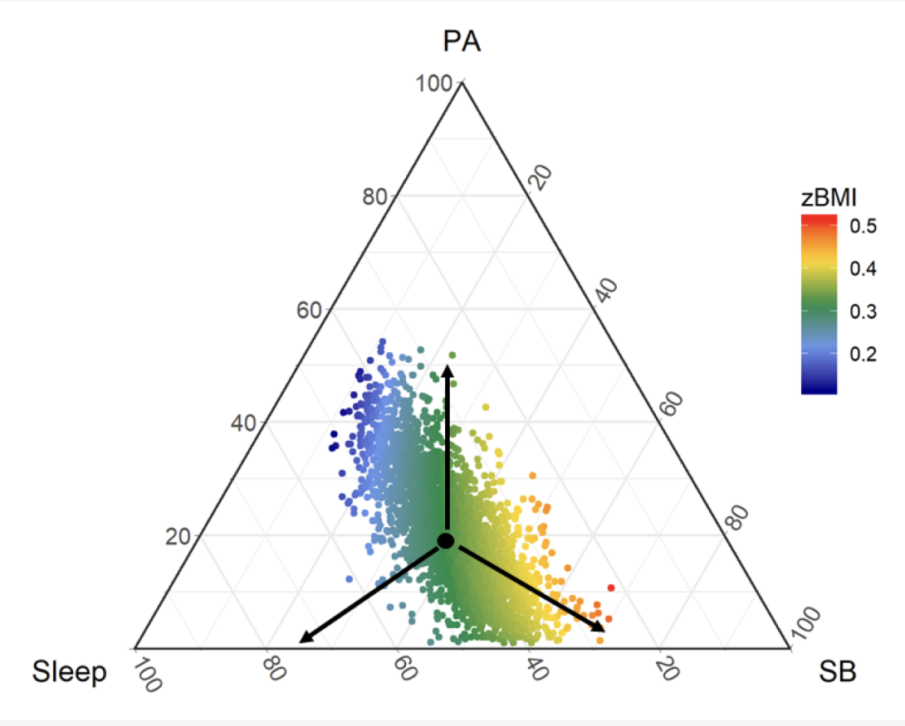

In order to be a successful Data Scientist, one has to speak the language of probability and statistics. It is the foundation on which we can build towards more realistic and avanced models, with the purpose of improving decision-making under uncertainty. This foundation is a prerequisite for all three perspectives: analytics/mining, machine learning and causal inference.
In order to build adequate models of economic and other complex phenomena, we have to take into account their inherent stochastic nature.
Data is just the appearance, an external manifestation of some latent processes (seen as random mechanisms). Even though we won’t know the exact outcome for sure, we can model general regularities and relationships as a result of the large scale of phenomena.
Think of measurements taken from the Large Hadron Collider experiments: the volume, noise, and complexity of data. Ultimately, we want to make inferences about the underlying, physical processes which govern the behavior and interaction of particles. How do we know that inference is accurate and true? A necessary, but not sufficient condition is that the conditions of that experiment are repeatable – such that “on average”, a pattern emerges.
A word of encouragement
Reviewing the fundamentals of statistics doesn’t have to be boring! We can put “the classics” in context of modern statistics, big data challenges, and use simulation instead of heavy mathematics and proof-based approaches.
Moreover, theoretical ideas underlying statistical practice, which we often take for granted, deserve an explicit articulation. This will improve our awareness, understanding, and grasp of the field – such that we can become more effective practitioners.
Figure 1: In this chapter and set of lectures, I attempt to review fundamental statistical ideas, concepts, and tools, in order to show their relevance in the day-to-day practice and decision-making. A secondary objective is to fill in the conceptual gaps left by the fact that it’s hard to make sense of it all the first time we’re encountering it in the classroom.
The plan for this lecture is the following: we start by constructing the probability triple, formalize sources of uncertainty, and investigate the building blocks of a statistical model. I then highlight in a few case-studies what can go wrong in the process of statistical inference and how difficult it is to choose the right model.
Rabbit hole warning
How far you go back into the abstract foundations? For practical intents and purposes, you won’t need measure theory and proof-based mathematical analysis.
I find those interesting for their own sake and understanding the foundations of higher-level tools we use. However, I can’t argue it’s an efficient use of your time.
The most technical, heavy, and mathematical part is about estimators and their properties, but it is necessary both for hypothesis testing and machine learning. To make it more accessible and intuitive, we will use simulation and visualization during the labs to get an understanding and intuition on how estimators behave. We wrap up the lecture by looking at the statistical process in firms and put it in contrast with the process for ML, predictive systems. Last, but not least, there is one more cautionary tale about multiple testing – which will be our gateway into truly modern statistics.
The probability triple
In the previous lecture, I mentioned why did we study probability theory. However, there is one more useful metaphor: remember how important is logic in mathematics, computer science, and philosophy; it’s one of the prerequisites in each of those, an essential tool for reasoning. Then, probability theory is the logic of uncertainty, a formal language. 1
1 If you studied fuzzy set theory, you might have a case for it being the candidate, however, it fell out of favor in practice – so I would suggest to focus on probability and Bayesian reasoning.
Often, probability and mathematical statistics are bundled together, as they make perfect sense in sequence, but they have different objectives in mind. Probability theory is concerned with the construction of probability triple \((\Omega, \mathcal{F}, \mathbb{P})\).
That is the foundation for developing useful tools like random variables and probability/cumulative density functions. Then, extending those to joint, conditional probabilities and multidimensional cases, introducing the machinery to operate all of that: like expectation, variance, moment-generating functions, conditioning, marginalization, Bayes theorem. This leads to the laws of large numbers, properties of distributions and their transformations.
We use all of those results to model relationships between observed and latent variables in business processes and phenomena. It’s a building block for answering the “simple” question: does X cause Y?
“I haven’t used Poisson outside that probability class”
If you empathise with this statement, you’re probably aware that it’s important, but wonder if it didn’t come up in practice – what about the rest of the machinery I described? My answer is that it’s so, so ubiquitous, but we need to learn to “see” the opportunities to use this set of tools in decision-making.
Poisson distribution and process can be a good choice to model counts of events per unit of time, space, with a large number of “trials”, each with a small probability of success.
Arrivals per hour: requests in a call center, arrivals at a restaurant, website visits. We can use it for capacity planning.
Bankrupcies filed per month, mechanical piece failures per week, engine shutdowns, work-related accidents. We can use these insights to assess risk and improve safety.
Forecasting slow-moving items in a retail store, e.g. for clothing. We’ll investigate the newsvendor problem in excruciating detail, where we have to purchase the inventories ahead of time.
A famous example is of L. Bortkiewicz: in Prussian army there were 0.70 deaths per one corps per one year caused by horse kicks. (“Law of small numbers”).
Just before you get all excited about these applications, keep in mind that every distribution has a story behind it, and a set of assumptions that have to be met.
Other tools are as prevalent and useful: Bayes rule, DAGs (directed acyclic graphs of random variables), the exponential family, laws of large numbers and the cental limit theorem. It holds both in applications and statistics itself.
In probability theory, we’re still in a mathematical world trying to capture the essence of the real world, but ultimately, we need statistical inference to estimate those parameters from data. Before we get into it in more detail: mathematically, computationally and in terms of business cases, we have to define that foundation – the probability triple.
To make the following more clear, let’s start with an experiment where we show a customer ten clothing items (a collection), and they have to pick the one they like best. If we repeated it with many customers, preferably representative for the population of interest,2 a pattern would emerge. This is an example of a discrete Outcome Set (or universal set, of all possible results). Alternatively, think of pebbles in an urn, where each one represents an outcome.
2 You might intuitively know what a population is, but there are surprisingly many pitfalls, so we’ll investigate that notion with lots of care.
As an academic aside, we have to thank Kolmogorov for putting probability into a rigorous, axiomatic framework based on set theory and making it open for mathematical enquiry with tools from mathematical analysis, which by that time were well-established. That is important, because we can’t work the same naive way with continuous measurements and phenomena, as we do with pebbles.
A random experiment (\(\mathscr{E}\)) is a set of conditions which are favorable for an event in a given form. It is that real-world process of interest which we try to simplify, with the following properties:
Possible results and outcomes are known apriori and exhaustably. For example: a coin/dice toss, quantity sold, time in a subscription, a default on the credit, a choice between subscriptions.
It’s never known which of the results of \(\mathscr{E}\) will manifest or appear before we run the experiment, the “experiment” amounting to randomly picking that clothing item or a pebble from the urn.
Despite that, there is a perceptible regularity, which can be eventually measured and quantified, that is, encoding the idea of a probabilistic “law” in the results. That regularity could be a result of the large scale of the phenomena, for example, many customers seeing a product on the shelf.
Repeatability of the conditions in which the experiment runs, like the comparability and perservation of context. This is optional in the Bayesian perspective, where we’re not thinking in long-run frequency terms. 3
Elementary event as an auxiliaty construction: one of the possible results of \(\mathscr{E}\), usually denoted by \(\omega_i \in \Omega\).
Universal set\(\Omega = \{ \omega_1, \omega_2, \dots \}\) is also called (Outcome/ State/ Selection space). It suggests the idea of complementarity and stochasticity: we don’t know which \(\omega_i\) will manifest, thus is a key object for a further formalization of probability measures.
We care not only about an event\(A = \bigcup\limits_{i = 1}^n \omega_i\) (which is an union of elementary events) and its realization, but also about other events in the Universal Set, because they might contribute with additional information (about the probability) of our event of interest – remember conditioning? This means that we we’re interested in “all” other events.
The event space\(\mathcal{F}\) is a sigma-algebra, should be defined on sets of subsets of \(\Omega\) and this is where measure theory shines. For technical reasons, we usually can’t define a probability measure on all sets of subsets. On an intuitive note, we define the probability measure on sigma-algebras because if those conditions did not hold, the measure wouldn’t make sense, unions of events would step out of the bounds of event space.
Probability as an extension of the measure: chance of events realizing. Note that the perceptible regularity can be thought as the ability to assign a probability (number between 0 and 1) to elementary events: \(\mathbb{P}(\omega_i)\). This is why additivity properties are key, as we care about random events, not only elementary events.
3

Source: Ross This is the view of probability as a long-run frequency of events occuring, for example, flipping a coin
Def: Algebra and Sigma-Algebra
A set of subsets \(\mathcal{F} \subset 2^\Omega\) is an algebra (field) if the following holds:
\(\Omega \in \mathcal{F}\) and \(\varnothing \in \mathcal{F}\)
If \(A \in \mathcal{F}\) then \(A^C \in \mathcal{F}\) (closed under complements)
If \(A, B \in \mathcal{F}\) then \(A \cup B \in \mathcal{F}\) (closed under union). Note that 2 and 3 imply that it’s closed under countable intersection
The additional condition for sigma-algebra: sigma refers to countability. If \(\{ A_i \}_{i \ge 1} \in \mathcal{F}\) then \(\bigcup\limits_{i \ge 1} A_i \in \mathcal{F}\) (closed under countable union)
Source: Wikimedia A beautiful visual representation
Probability Measure
Suppose we have defined a measurable space\((\Omega, \mathcal{F})\), where \(\mathcal{F}\) is a sigma-algebra. A probability measure is the function \(\mathbb{P}:\mathcal{F} \rightarrow [0, 1]\) such that:
\(\mathbb{P}(\Omega) = 1\)
For countable sequences of mutually disjoint effects, i.e. \(\forall \{ A_i \}_{i \ge 1}\) where \(A_i \bigcap\limits_{i \ne j} A_j = \varnothing\), the following holds \(\mathbb{P}(\bigcup\limits_{i \ge 1} A_i) = \sum\limits_{i \ge 1} \mathbb{P}(A_i)\)
A probability triple\((\Omega, \mathcal{F}, \mathbb{P})\) is the fundamental object the whole probability theory is constructed upon. Again, Kolmogorov took the informal, gambling-type probability and put it onto axiomatic foundations – which enabled future breakthroughs. Notice that this definition of probability is not the naive one, of number of successes over the total possible numbers an event could arise.
Measure theory rabbit hole: Why not all subsets?
The reasons for this are very technical, and the concept of a sigma-algebra is essential in resolving the resulting paradoxes. If you’re interested in these technical details, you can check out my relatively accessible introudction to measure theory and the Caratheodori extension theorem.
Even though you can go a long way as a practitioner with standard tools in probability theory, deeply understanding its measure-theoretic foundations could open up a whole new world to the researcher. It’s easy to take the results from statistics and probability for granted, but it’s useful to be aware what hides beneath the surface.
Evans Lawrence gives the following example of a function which is neither discrete nor continuous, for which you flip a coin and if it comes heads, draw from an uniform distribution and in case of tails a unit mass at one. If \(\chi_{[0,1]}(x) = (e^{ix} - 1)/ix\) is the characteristic function of the interval from zero to one, in a way you can formulate its density, but usually it’s not the case, nor is it very helpful to think about it in such terms.
Even though you can visualize this in two dimensions as the uniform and a spike, or as a CDF with a discontinuity, this approach just breaks down in higher dimensions or more complicated combinations of functions.
Jeffrey Rosenthal begins his book by a similar motivation, constructing the following random variable as a coin toss between a discrete \(X \sim Pois(\lambda)\) and continuous \(Y \sim \mathcal{N}(0,1)\) r.v.
\[\begin{equation}
Z = \begin{cases}
X, p = 0.5 \\
Y, p = 0.5
\end{cases}
\end{equation}\]
He then challenges the readers to come up with the expected value \(\mathbb{E}[Z^2]\) and asks on what is it defined? It is indeed a hard question.
We stumble upon different interpretations of probability (frequentists vs bayesians), when trying to clarify that “perceptible regularity”, despite the mathematics of probability theory being exactly the same. These are not “theorems” to prove, but rather axioms and philosophies often taken in practice as the starting point.
The frequency theory defines the probability of an outcome as the limiting frequency with which that outcome appears in a long series of similar events. If our experiment or investigation is such that those relative frequencies converge, then we can prove the LLN and the CLT. Basically, that we should view probability and predictions based on historical data. 4
4“To a frequentist, the probability of an event is intrinsic to that event’s nature and not something perceived, only discovered.”
Formally, we can represent this statement by Bernoulli’s theorem, which is a special case of Law of Large Numbers, where \(m_n\) is the number of times an event \(A\) occurs in \(n\) trials.
\[
\lim_{n \to \infty} \frac{m_n}{n} = p
\]
Frequency Convergence as Statistical Stability
Since we don’t have an infinite number of trials, the best we can do is to say that “experimental evidence strongly suggests statistical stability”. This applies really well in gambling (by design) and physics, but is it plausible in human behavior? I don’t think so, but it might be unreasonably effective, even if not true.
So, which one do you recommend? It depends, learn both! But I would agree with Richard McElreath’s meme: it’s the scientific process that has the last laugh
Bayesians view probability as the degree of confidence in a belief, an apriori guess or knowledge, that is, before seeing the data. Then, using inverse probability, you update your beliefs in the face of evidence and data. Often, you do have knowledge and can define your prior probabilities by a process of ellicitation – it should’t be too vague, neither dogmatic. Other Bayesians put in great effort to pick non-informative priors, as the data should quickly overwhelm it.
TODO: Ellicitation of probability -> we’ll do more later with inference
Random Variables
Thank you for bearing with me through the theory you have probably seen before, but we’re not done. We’re still in the land of set theory, and it is very hard to operate that way in practice – so, we need a new concept which will allow us to use the tools of mathematical analysis in probability, in order to make it feasible for practical uses.
The breakthrough idea of a Random Variable
We started from some phenomena of interest and a random experiment. The random variable is a necessary abstraction in order to mathematically define quantifiable characteristics of the objects. Meaning, we start working with numbers instead of some qualitative properties. Now, we’re in business!
Random Variable is not a variable, nor random
A random variable is quantificator of elementary events, a function defined on the outcome space which maps the elementary events to the real number line. That mapping can’t be done in any way we wish, it has to perserve the informational structure of the sample space. That is one of the technical reasons for sigma-algebras we mentioned before and is related to the idea of measurability, meaning we can assign a meaningful “volume”.
Let’s figure out what the hell do we mean by that fine print condition, using the diagram below. The idea of conservation of the informational structure is actually equivalent to the one of measurablility. If this property doesn’t hold, it’s not possible to explicitly and uniquely refer to the sets (events) of interest.
The idea is that the preimage defined above \(X^{-1}((-\infty,r]) = E \in \mathcal{F}\) on the following interval corresponds to an event E which should be in the event space \(\mathcal{F}\). Because the only thing that varies is the limit of the interval r, the randomness comes from it. Also, it automatically suggests the idea of the Cumulative Distribution Function, which is \(F_X(X \le r)\).
CDF, one of the most important constructs in probability is a direct consequence of the definition of the random variable:
\[
P(A ≤ r) = F_X(X ≤ r)
\]
In the practice of modeling, we often work with probability density functions, because it is more convenient in many cases. Then, in order to translate to probabilities, we would think in terms of areas under that curve. For sure, you remember the following duality between CFD and PDF:
\[
F'(x) = p(x)
\]
Idea: Norman Wildberger, Gheorghe Ruxanda. A graphical representation of the random variable. It is the construct that enables us to define the statistical population (some relevant aspect of it to us)!
As a motivation of why do we have to understand all of this, when for most practical applications we can get by just fine with using the results and tools from probability, I will introduce two examples: one of compositional data analysis5 and time series analysis. What I want to say, is that for more “exotic” applications, we might need to tweak that probability triple because of the nature of the problem, which has downstream consequences for all the statistical machinery we use in those applications.
5

Source: Dumuid: Data in a Simplex, which is later translated to \(R^n\) by a carefully constructed basis expansion
The curious case of Compositional Data Analysis
Sometimes, the data doesn’t “live” in our normal, intuitive, euclidian space \(\mathbb{R}^n\). There are cases when the object of our analysis are proportions or compositions: think of what a material is made of, the proportion of the demand for different sizes of a shoe or garment.
We don’t necessarily care about their absolute value, but about their relative proportion. If we blindly apply traditional methods, or even statistical summaries, we will quickly hit weird results and paradoxes. So, we have to tweak existing methods we have make sense for compositions.
Compositional data analysis solves those issues by defining a probability triple over the simplex (instead of \(\mathbb{R}^n\)): \((\mathcal{S}^n, \mathcal{F}, \mathbb{P})\). This leads to a different definition of the event space \(\mathcal{F}\), which is also a sigma-algebra and a different definition of the probability measure \(\mathbb{P}\).
Remember our exaple of pigeon superstition in the context of learning? It is not surprising to me that measure theory becomes important in Learning Theory,6 which is exactly those carefully formulated principles that will prevent our automated learners to become supersitious.
6 Even though most courses from which I studied don’t mention it explicitly (Yaser Abu-Mostafa, Shai Ben-David, Reza Shadmehr), according to Mikio’s Brown answer it’s essential in the idea of uniform convergence and its bounds, where “you consider the probability of a supremum over an infinite set of functions, but out of the box measure theory only allows for constructions with countably infinite index sets”.
For the next example, you don’t have to understand what Gaussian Processes are or are used for. However, later in the course, we will discuss nonparametric methods for hypothesis testing. Their usefulness comes from the fact that we make less distributional assumptions about our population, therefore getting more robust results, in contrast with choosing a wrong model or distribution.
It’s not that these methods don’t have parameters, but the parametrization varies depending on how much data we have, which makes them very flexible in a wide variety of applications, where we just don’t know what is a reasonable distribution or parametric functional form for the relationship that we model.
Nonparametrics and Gaussian Processes
If we’re thinking about a regression from the nonparametric perspective: that is, over a set of abstract functions: \(f(x) \in \mathscr{C}^2:X \rightarrow \mathbb{R}\), 7 we might want to know how a draw of samples from an infinite set of continuous differentiable functions might look like.
\[
f(x) \sim GP(\mu(x); K(x,x'))
\]
The questions arises: how to define a PDF (probability density function) in this space? In my bachelor thesis, I got away with using Gaussian Processes, which are a very special class of stochastic processes. In this special case I could informally define an apriori distribution by defining the mean vector and Kernel (covariance function), then condition it on observed data with a Normal Likelihood.
Source: Bizovi: A posterior distribution of the Gaussian Processes, when conditioned on data
In the case of stochastic processes, we work with a sequence of random variables \(\{X_t, t \in T \}\) and start asking questions:
What kind of time dependency is there? (autocorrelation)
What is the long-run behavior?
Can we say something about extreme events?
A lot of important applications in economics and finance are dynamic, so we have to work with time series very often. It gets worse when data is correlated not only in time, but also geographically – which is why the field of spatio-temporal data analysis is in such demand right now for policy-making.
Thus, a natural extension of this probability machinery we discussed so far is stochastic processes, underlying these dynamical systems. We can look at our time series as a manifestation, a particular instantiation of this latent process. Depending on which one we choose, we can model a wide range of phenomena.

{kind=link}